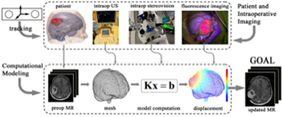
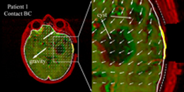
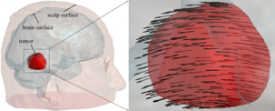
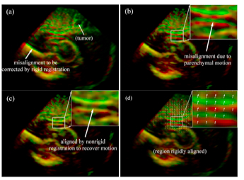
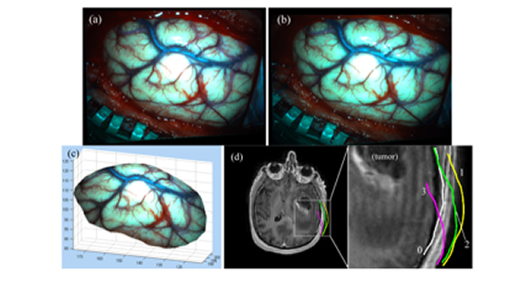
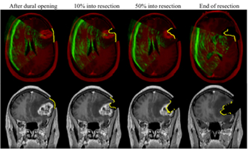

Image-guided neuronavigation using preoperative images has become the standard-of-care in many open cranial surgeries. Brain shift is the single most important factor that degrades registration accuracy during surgery. Intraoperative imaging techniques are important for brain shift compensation. However, they alone are impractical for broad clinical acceptance due to high capital cost and intrusion on surgical workflow or insufficient to provide full-field image data for neuronavigation. Biomechanical models are becoming increasingly attractive for estimating brain deformation intraoperatively because they offer whole-brain displacement fields from which to generate model-updated MR images for subsequent guidance, and are low in cost.

Biomechanical models incorporate specific loading and boundary conditions in the OR and estimate whole-brain deformation. Because brain shift during surgery is seemingly unpredictable and usually complex, incorporating displacements measured intraoperatively is important to ensure sufficient accuracy in model computation. A typical schematic of model-based brain shift compensation is illustrated in Fig. 1, showing the patient's head and intraoperative images (e.g., iUS, iSV, and iFI) are continuously registered by a common tracking system. The resulting displacement data are often sparse and are assimilated into a subject-specific biomechanical model to estimate the whole-brain displacement field based on which an updated MR volume is generated for subsequent neuronaviga-tion.
Fig. 1. Illustration of model-based brain shift compensation. The patient's head and intraopera-tive images (e.g., iUS, iSV, and iFI) are continuously monitored using a common tracking sys-tem. The resulting sparse displacement data are assimilated into a biomechanical model to pro-duce whole-brain deformation from which an updated MR volume is generated for subsequent neuronavigation.
Our group has developed a data-guided compensation strategy to maintain image registration accuracy within the operative field. Because model solution is guided by intraoperative motion measurements, the reliance on model prediction is significantly reduced. Figure 2 illustrates a typical brain deformation field estimated by an inversion data assimilation scheme.

Fig. 2. Typical brain deformation field estimated by the inversion data assimilation scheme us-ing the brain-skull contact boundary conditions that allow the brain parenchyma to move towards or away from the skull. Thick yellow lines: cross-section of cortical surface acquired from co-registered iSV; Solid/dashed white lines: cross-sections of model-updated brain surface; Thin dashed white lines: skull inner-surface.

Measuring parenchymal displacements with iUS is conceptually straightforward because features of interest are captured with a single imaging modality and displacement mapping is essentially a registration to match features (e.g., tumor) at different points in time. With 2D iUS, however, a direct intramodality registration may not be possible between two arbitrary acquisitions because of limited sampling and gaps between image planes. An indirect approach can then be used to match features in 2D iUS acquired at two surgical stages using pMR as a reference. Fig. 3 shows displacement field before and after dural opening.
Fig. 3. Displacement map generated by applying a transformation matrix on the triangulated tu-mor boundary surface nodes.

With true 3D iUS image volumes, direct intramodality registrations can be used to extract feature displacement maps because of the much larger translational and rotational capture ranges. Similarly with 2D iUS, a "last-known" correct registration is first established between 3DUS and pMR before dural opening in order to collectively correct any misalignment between tumor (and/or other feature) boundaries due to errors in patient registration and US transducer calibration. This registration is important because it defines the spatial transformation required to transform sparse displacement data from the 3D iUS image space into the pMR image space, as illustrated in Fig. 4.
Fig. 4. Overlays of 3D iUS before (red) and after (green) dural opening using transforms obtained from the optical tracking (a) or rigid body re-registration (b). Feature alignment was significantly improved after B-Spline nonrigid registration (c), suggesting the effectiveness of the registration technique in capturing feature displacement. The resulting parenchymal feature displacement vectors are shown in (d).

Stereovision is another important intraoperative imaging technique that captures a texture intensity-encoded profile of the exposed cortical surface during surgery. Fig. 5 illustrates the use of stereovision technique to reconstruct the exposed cortical surface and correlate with co-registered pMR images, which clearly demonstrate dynamic evolution of the cortical surface during the course of surgery.
Fig. 5. Illustration of stereovision surface reconstruction: rectified left (a) and right (b) camera images after dural opening, which limit the search for correspondence points along a horizontal line. The reconstructed 3D cortical surface is shown in pMR image space (c). Cross-sections of a representative pMR axial image with respect to the reconstructed cortical surfaces (tumor cavity wall not included) are shown for four distinct surgical stages: (0) before dural opening; (1) after dural opening; (2) right before the start of tumor resection; and (3) after tumor resection.
The goal of estimating intraoperative brain deformation is to generate uMR that incorporates sparse displacements measured intraoperatively in order to allow subsequent neuronavigation. We illustrate the types of uMR images that can be generated using the techniques presented in this chapter through a typical clinical case. This patient was a 56-year-old male undergoing malignant glioma tumor re-section. Both 3D iUS and iSV images were acquired at five temporally distinctive surgical stages (i.e., before and after dural opening, and in the beginning, middle, and at the end of tumor resection). For each surgical stage after dural opening, uMR was generated and compared with iUS and iSV for consistency in paren-chymal feature alignment (Fig. 6).

Fig. 6. Representative axial and coronal uMR images after dural opening (left), in the beginning (~10% into resection; second column), middle (~50% into resection; third column), and at the end of resection (right), overlaid with corresponding cross-sections generated from reconstructed iSV surfaces (yellow line). Axial images are also overlaid with iUS (green). The alignments be-tween iUS, iSV, and uMR with parenchymal features indicate consistency between model esti-mates and intraoperative measurements.
Biomechanical models provide estimates of whole-brain deformation and are im-portant complements to intraoperative imaging for brain shift compensation in im-age-guided neurosurgery. Here, we have briefly illustrated important aspects of a brain shift compensation strategy based on inverse biomechanical modeling. The clinical feasibility of this brain shift compensation strategy depends on its compu-tational efficiency and its clinical utility relies on its updating accuracy. Ulti-mately, validation is necessary to ensure the accuracy of the estimated intraopera-tive brain deformation. In practice, data derived from both iUS and iSV can be utilized in order to maximize estimation accuracy deep in the brain as well as on the cortical surface. To validate model-estimated brain deformation, iFI may offer additional verification once tumor is in view. Because currently fluorescence is only available from the tumor surface, model-based image-guidance may play a more important role in the early stages of tumor resection (e.g., before tumor is exposed), while iFI may provide the best form of guidance once tumor is exposed.